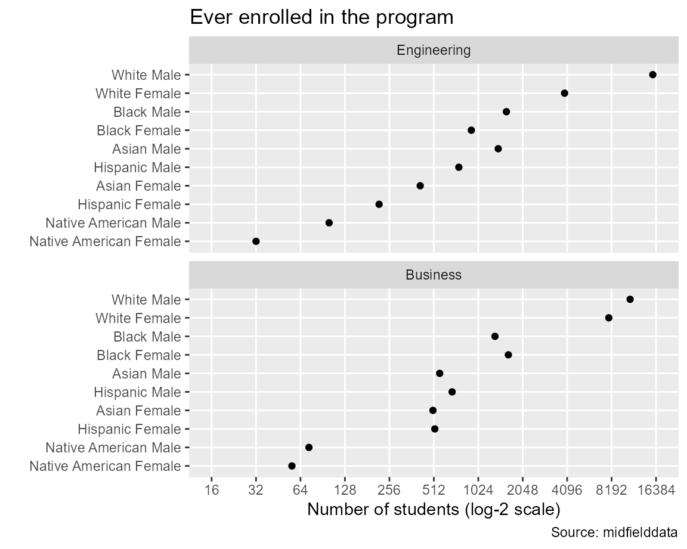

In the MIDFIELD practice data, the programs with the greatest numbers of students are Business and Engineering. In this vignette, we compare the number of students ever enrolled in these programs, grouped by sex and race/ethnicity.
We use midfieldr functions to access midfielddata student records. We condition, group and summarize the data, and graph a result. For data carpentry, we use base R and selected syntax from the data.table package.
midfieldr functions
midfieldr built-in data sets
cippackages
# packages used
library(midfieldr)
library(midfielddata)
library(data.table)
library(ggplot2)
# optional code to control data.table printing
options(datatable.print.nrows = 10, datatable.print.topn = 5)Instructional programs are encoded by 6-digit CIP codes, included in midfieldr in the cip data set. You may view its help page by running
? cipWe search cip for our program codes using filter_text(). You may view its help page by running
? filter_textIn this example, we assume we have already searched cip and found that the codes we want start with 14 (engineering) and 52 (business). Our next step is to pull all 6-digit codes associated with these two programs.
# business
business <- filter_text(cip, keep_text = "^52", keep_col = "cip6")
# add program label
business[, program := "Business"]
# examine the result
business[order(cip6)]
#> cip6 program
#> 1: 520101 Business
#> 2: 520201 Business
#> 3: 520202 Business
#> 4: 520203 Business
#> 5: 520204 Business
#> ---
#> 90: 521910 Business
#> 91: 521999 Business
#> 92: 522001 Business
#> 93: 522101 Business
#> 94: 529999 BusinessRepeat for engineering
# engineering
engineering <- filter_text(cip, keep_text = "^14", keep_col = "cip6")
# add program label
engineering[, program := "Engineering"]
# examine the result
engineering[order(cip6)]
#> cip6 program
#> 1: 140101 Engineering
#> 2: 140102 Engineering
#> 3: 140201 Engineering
#> 4: 140301 Engineering
#> 5: 140401 Engineering
#> ---
#> 52: 144401 Engineering
#> 53: 144501 Engineering
#> 54: 149999 Engineering
#> 55: 14XXXX Engineering
#> 56: 14YYYY EngineeringBind the two data frames.
# bind the two data frames
program_group <- rbindlist(list(business, engineering))
# examine the result
program_group[order(program, cip6)]
#> cip6 program
#> 1: 520101 Business
#> 2: 520201 Business
#> 3: 520202 Business
#> 4: 520203 Business
#> 5: 520204 Business
#> ---
#> 146: 144401 Engineering
#> 147: 144501 Engineering
#> 148: 149999 Engineering
#> 149: 14XXXX Engineering
#> 150: 14YYYY EngineeringWe extract the cip6 column as a character vector to use later to extract student data by their CIP codes.
# extract a vector of 6-digit CIP codes
group_cip <- program_group$cip6
# examine the result
str(group_cip)
#> chr [1:150] "520101" "520201" "520202" "520203" "520204" "520205" "520206" ...We access the term data to obtain the IDs of all students ever enrolled in these programs. The result, DT, is a data table to which we will add information as we proceed.
# extract unique students ever enrolled from term data
cols_we_want <- c("id", "cip6", "institution")
rows_we_want <- midfieldterms$cip6 %chin% group_cip
DT <- midfieldterms[rows_we_want, ..cols_we_want]
DT <- unique(DT)
# examine the result
DT[order(id)]
#> id cip6 institution
#> 1: MID25783135 520101 Institution M
#> 2: MID25783162 14XXXX Institution M
#> 3: MID25783162 520301 Institution M
#> 4: MID25783162 521401 Institution M
#> 5: MID25783166 14XXXX Institution M
#> ---
#> 50961: MID26697484 521401 Institution L
#> 50962: MID26697576 520301 Institution L
#> 50963: MID26697576 521401 Institution L
#> 50964: MID26697599 521201 Institution L
#> 50965: MID26697685 521201 Institution LWe update the IDs a number of times, so we extract them from the data table as a character vector.
# initialize an ID vector
latest_id <- DT[, unique(id)]Examining the result shows a vector with 36,685 unique IDs.
# examine the result
str(latest_id)
#> chr [1:36685] "MID25783135" "MID25783162" "MID25783166" "MID25783167" ...We use subset_matriculant() to limit our research to students for whom we have matriculation information. The default matriculation record is midfieldstudents.
# limit study to students with matriculation data
DT <- subset_matriculant(DT)
# examine the result
DT
#> id cip6 institution
#> 1: MID25783135 520101 Institution M
#> 2: MID25783162 14XXXX Institution M
#> 3: MID25783162 520301 Institution M
#> 4: MID25783162 521401 Institution M
#> 5: MID25783166 14XXXX Institution M
#> ---
#> 50961: MID26697484 521401 Institution L
#> 50962: MID26697576 520301 Institution L
#> 50963: MID26697576 521401 Institution L
#> 50964: MID26697599 521201 Institution L
#> 50965: MID26697685 521201 Institution LUpdate the ID vector.
# update the ID vector
latest_id <- DT[, unique(id)]
# examine the result
length(latest_id)
#> [1] 36685In this case, all our enrollees are recorded in the student data set, so the number of students remains the same.
Our results are going to be grouped by program, race/ethnicity, and sex. Here, we join these variables to the working data frame. We use add_race_sex() to access the student data to obtain race/ethnicity and sex as self-reported at matriculation.
# join demographics
DT <- add_race_sex(DT)
# examine the result
DT
#> id cip6 institution race sex
#> 1: MID25783135 520101 Institution M White Male
#> 2: MID25783162 14XXXX Institution M White Male
#> 3: MID25783162 520301 Institution M White Male
#> 4: MID25783162 521401 Institution M White Male
#> 5: MID25783166 14XXXX Institution M White Male
#> ---
#> 50961: MID26697484 521401 Institution L White Female
#> 50962: MID26697576 520301 Institution L Asian Male
#> 50963: MID26697576 521401 Institution L Asian Male
#> 50964: MID26697599 521201 Institution L White Male
#> 50965: MID26697685 521201 Institution L White MaleNext we join the program names from program_group to our working data frame by cip6. Set all.x = TRUE for a left-outer join, that is, keeping all the rows of DT.
# add program name
DT <- merge(DT, program_group, by = "cip6", all.x = TRUE)
# examine the result
DT
#> cip6 id institution race sex program
#> 1: 140101 MID25853474 Institution B Other Male Engineering
#> 2: 140101 MID25864225 Institution B White Female Engineering
#> 3: 140101 MID25864273 Institution B Asian Male Engineering
#> 4: 140101 MID25864554 Institution B White Male Engineering
#> 5: 140101 MID25864996 Institution B Asian Male Engineering
#> ---
#> 50961: 529999 MID26356699 Institution E International Male Business
#> 50962: 529999 MID26356852 Institution E White Female Business
#> 50963: 529999 MID26357196 Institution E White Female Business
#> 50964: 529999 MID26357287 Institution E White Male Business
#> 50965: 529999 MID26357906 Institution E White Male BusinessNext we group by our grouping variables variables and count the number of students in each grouping. The count is assigned to the new ever column.
# assign
grouping_variables <- c("program", "sex", "race")
# aggregate
DT <- DT[, .(ever = .N), keyby = grouping_variables]
# examine the result
print(DT, nrows = 32)
#> program sex race ever
#> 1: Business Female Asian 505
#> 2: Business Female Black 1637
#> 3: Business Female Hispanic 520
#> 4: Business Female International 92
#> 5: Business Female Native American 56
#> 6: Business Female Other 163
#> 7: Business Female Unknown 67
#> 8: Business Female White 7842
#> 9: Business Male Asian 561
#> 10: Business Male Black 1329
#> 11: Business Male Hispanic 681
#> 12: Business Male International 143
#> 13: Business Male Native American 73
#> 14: Business Male Other 243
#> 15: Business Male Unknown 83
#> 16: Business Male White 10928
#> 17: Engineering Female Asian 414
#> 18: Engineering Female Black 919
#> 19: Engineering Female Hispanic 218
#> 20: Engineering Female International 75
#> 21: Engineering Female Native American 32
#> 22: Engineering Female Other 108
#> 23: Engineering Female Unknown 25
#> 24: Engineering Female White 3934
#> 25: Engineering Male Asian 1398
#> 26: Engineering Male Black 1588
#> 27: Engineering Male Hispanic 756
#> 28: Engineering Male International 444
#> 29: Engineering Male Native American 100
#> 30: Engineering Male Other 385
#> 31: Engineering Male Unknown 71
#> 32: Engineering Male White 15575
#> program sex race everTo begin conditioning the data for graphing, we remove ambiguous levels of race/ethnicity.
# remove ambiguous levels of race/ethnicity
rows_we_want <- !DT$race %chin% c("Unknown", "International", "Other")
DT <- DT[rows_we_want]
# examine the result
unique(DT$race)
#> [1] "Asian" "Black" "Hispanic" "Native American"
#> [5] "White"To protect confidentiality, we omit observations with 10 or fewer students ever enrolled.
# protect confidentiality of small populations
DT <- DT[ever > 10]
# examine the result
print(DT, nrows = 20)
#> program sex race ever
#> 1: Business Female Asian 505
#> 2: Business Female Black 1637
#> 3: Business Female Hispanic 520
#> 4: Business Female Native American 56
#> 5: Business Female White 7842
#> 6: Business Male Asian 561
#> 7: Business Male Black 1329
#> 8: Business Male Hispanic 681
#> 9: Business Male Native American 73
#> 10: Business Male White 10928
#> 11: Engineering Female Asian 414
#> 12: Engineering Female Black 919
#> 13: Engineering Female Hispanic 218
#> 14: Engineering Female Native American 32
#> 15: Engineering Female White 3934
#> 16: Engineering Male Asian 1398
#> 17: Engineering Male Black 1588
#> 18: Engineering Male Hispanic 756
#> 19: Engineering Male Native American 100
#> 20: Engineering Male White 15575We combine race/ethnicity and sex to form the race_sex categorical variable.
# create a new category
DT[, race_sex := paste(race, sex, sep = " ")]
# examine the result
DT
#> program sex race ever race_sex
#> 1: Business Female Asian 505 Asian Female
#> 2: Business Female Black 1637 Black Female
#> 3: Business Female Hispanic 520 Hispanic Female
#> 4: Business Female Native American 56 Native American Female
#> 5: Business Female White 7842 White Female
#> ---
#> 16: Engineering Male Asian 1398 Asian Male
#> 17: Engineering Male Black 1588 Black Male
#> 18: Engineering Male Hispanic 756 Hispanic Male
#> 19: Engineering Male Native American 100 Native American Male
#> 20: Engineering Male White 15575 White MaleMultiway data are characterized by two categorical variables and one quantitative variable (Cleveland, 1993). In this example, the two categories are program and race/ethnicity/sex and the quantitative variable is the number of students ever enrolled.
To structure the data in multiway form, we select the three multiway variables.
# select the three multiway variables
cols_we_want <- c("program", "race_sex", "ever")
DT <- DT[, ..cols_we_want]
# examine the result
DT
#> program race_sex ever
#> 1: Business Asian Female 505
#> 2: Business Black Female 1637
#> 3: Business Hispanic Female 520
#> 4: Business Native American Female 56
#> 5: Business White Female 7842
#> ---
#> 16: Engineering Asian Male 1398
#> 17: Engineering Black Male 1588
#> 18: Engineering Hispanic Male 756
#> 19: Engineering Native American Male 100
#> 20: Engineering White Male 15575The second attribute of multiway data is that the levels of the categories are ordered by the median value of the quantitative variable. prepare_multiway() converts the categorical variables to factors and orders the category levels.
# order the category levels
DT <- prepare_multiway(DT)The median values are attributes of the data frame. We can view them as follows. Note that program and race_sex are now factors ordered by the median enrolled numbers (recorded under the scores attribute).
lapply(DT, FUN = attributes)
#> $program
#> $program$levels
#> [1] "Business" "Engineering"
#>
#> $program$class
#> [1] "factor"
#>
#> $program$scores
#> Business Engineering
#> 621.0 837.5
#>
#>
#> $race_sex
#> $race_sex$levels
#> [1] "Native American Female" "Native American Male" "Hispanic Female"
#> [4] "Asian Female" "Hispanic Male" "Asian Male"
#> [7] "Black Female" "Black Male" "White Female"
#> [10] "White Male"
#>
#> $race_sex$class
#> [1] "factor"
#>
#> $race_sex$scores
#> Asian Female Asian Male Black Female
#> 459.5 979.5 1278.0
#> Black Male Hispanic Female Hispanic Male
#> 1458.5 369.0 718.5
#> Native American Female Native American Male White Female
#> 44.0 86.5 5888.0
#> White Male
#> 13251.5
#>
#>
#> $ever
#> NULLWe use ggplot2 to graph the multiway data. Rows and panels, from top to bottom, are ordered by decreasing medians. We use a logarithmic scale because the numbers differ by orders of magnitude. In a log base-2 scale, every grid line represents a doubling of the previous grid line.
ggplot(data = DT, mapping = aes(x = ever, y = race_sex)) +
facet_wrap(facets = vars(program), ncol = 1, as.table = FALSE) +
geom_point(na.rm = TRUE) +
scale_x_continuous(
trans = "log2",
breaks = 2^seq(4, 14),
limits = 2^c(4, 14)
) +
theme(panel.grid.minor.x = element_blank()) +
labs(
x = "Number of students (log-2 scale)",
y = "",
title = "Ever enrolled in the program",
caption = "Source: midfielddata"
)
The vignette code chunks are collected below in a single, condensed script.
# packages used
library(midfieldr)
library(midfielddata)
library(data.table)
library(ggplot2)
# gather programs
business <- filter_text(cip, keep_text = "^52", keep_col = "cip6")
business <- business[, program := "Business"]
engineering <- filter_text(cip, keep_text = "^14", keep_col = "cip6")
engineering[, program := "Engineering"]
program_group <- rbindlist(list(engineering, business))
group_cip <- program_group$cip6
# gather students
cols_we_want <- c("id", "cip6", "institution")
rows_we_want <- midfieldterms$cip6 %chin% group_cip
DT <- midfieldterms[rows_we_want, ..cols_we_want]
DT <- unique(DT)
latest_id <- DT[, unique(id)]
DT <- subset_matriculant(DT)
latest_id <- DT[, unique(id)]
# join grouping variables
DT <- add_race_sex(DT)
DT <- merge(DT, program_group, by = "cip6", all.x = TRUE)
# group and summarize
grouping_variables <- c("program", "race", "sex")
DT <- DT[, .(ever = .N), by = grouping_variables]
# condition the data for display
rows_we_want <- !DT$race %chin% c("Unknown", "International", "Other")
DT <- DT[rows_we_want]
DT <- DT[ever > 10]
DT[, race_sex := paste(race, sex, sep = " ")]
cols_we_want <- c("program", "race_sex", "ever")
DT <- DT[, ..cols_we_want]
DT <- prepare_multiway(DT)
# graph results
ggplot(data = DT, mapping = aes(x = ever, y = race_sex)) +
facet_wrap(facets = vars(program), ncol = 1, as.table = FALSE) +
geom_point(na.rm = TRUE) +
scale_x_continuous(
trans = "log2",
breaks = 2^seq(4, 14),
limits = 2^c(4, 14)
) +
theme(panel.grid.minor.x = element_blank()) +
labs(
x = "Number of students (log-2 scale)",
y = "",
title = "Ever enrolled in the program",
caption = "Source: midfielddata"
)